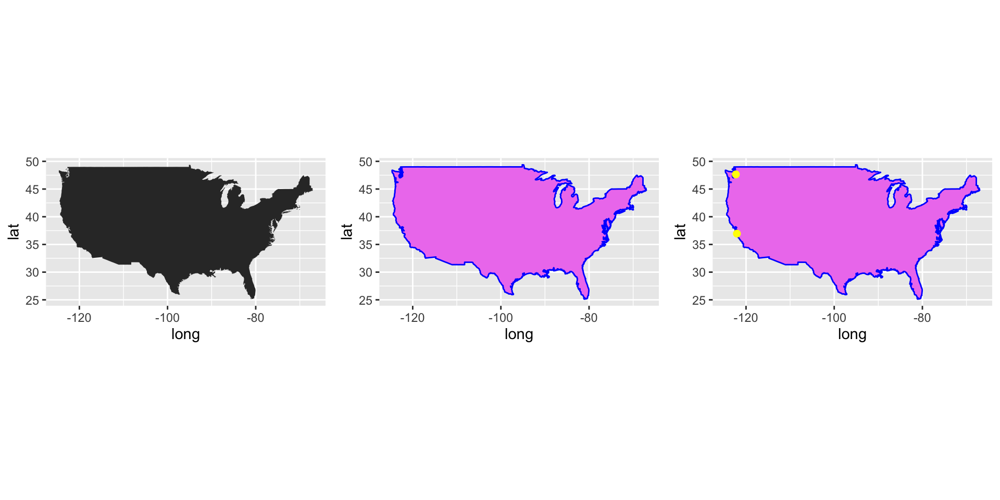
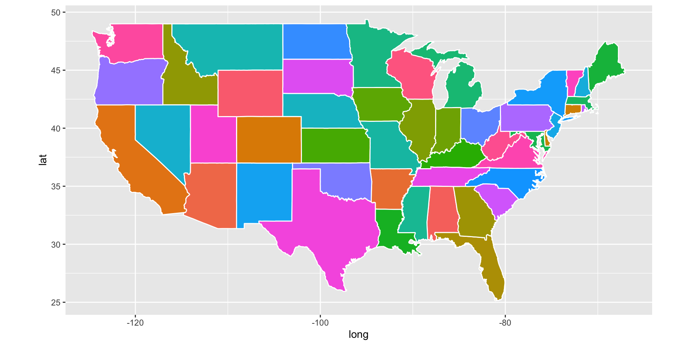
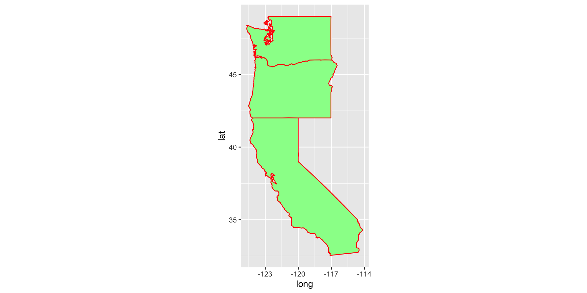

R package maps and mapdata provide some maps. We will use them for the USA map
library(ggplot2)
library(maps)
library(mapdata)
library(sp)
usa <- map_data("usa")
dim(usa)## [1] 7243 6head(usa)## long lat group order region subregion
## 1 -101.4078 29.74224 1 1 main <NA>
## 2 -101.3906 29.74224 1 2 main <NA>
## 3 -101.3620 29.65056 1 3 main <NA>
## 4 -101.3505 29.63911 1 4 main <NA>
## 5 -101.3219 29.63338 1 5 main <NA>
## 6 -101.3047 29.64484 1 6 main <NA>tail(usa)## long lat group order region subregion
## 7247 -122.6187 48.37482 10 7247 whidbey island <NA>
## 7248 -122.6359 48.35764 10 7248 whidbey island <NA>
## 7249 -122.6703 48.31180 10 7249 whidbey island <NA>
## 7250 -122.7218 48.23732 10 7250 whidbey island <NA>
## 7251 -122.7104 48.21440 10 7251 whidbey island <NA>
## 7252 -122.6703 48.17429 10 7252 whidbey island <NA>First, we plot usa map
library(gridExtra)
gg0 = ggplot() + geom_polygon(data = usa, aes(x=long, y = lat, group = group)) +
coord_quickmap()
gg1 <- ggplot() +
geom_polygon(data = usa, aes(x=long, y = lat, group = group), fill = "violet", color = "blue") +
coord_quickmap()
labs <- data.frame(
long = c(-122.064873, -122.306417),
lat = c(36.951968, 47.644855),
names = c("SWFSC-FED", "NWFSC"),
stringsAsFactors = FALSE
)
gg2 = gg1 +
geom_point(data = labs, aes(x = long, y = lat), color = "yellow", size = 2)
grid.arrange(gg0, gg1, gg2, nrow = 1)
### Draw plots for all USA States
states <- map_data("state")
ggplot(data = states) +
geom_polygon(aes(x = long, y = lat, fill = region, group = group), color = "white") +
coord_quickmap() + guides(fill=FALSE) 
### Draw a subset of USA states
### Use function subset to select states.
west_coast <- subset(states, region %in% c("california", "oregon", "washington"))
ggplot(data = west_coast) +
geom_polygon(aes(x = long, y = lat, group = group), fill = "palegreen", color = "red") +
coord_quickmap()
Can you tell the difference between color and fill argument?